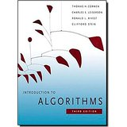

Syllabus
CIS 17C C++ Data Structures
|
General Course Information |
|
|
1 |
Contact Information Instructor: Mark E. Lehr Email: mark.lehr@rcc.edu Phone: (951) 222-8260 Office Hours: Hyperlink |
|
2 |
|
|
3 |
Introduction to Algorithms, 3rd Edition (MIT Press) 3rd Edition by Thomas H. Cormen (Author), Charles E. Leiserson (Author), Ronald L. Rivest (Author), Clifford Stein  · Series: MIT Press · Hardcover: 1312 pages · Publisher: The MIT Press; 3rd edition (July 31, 2009) · Language: English · ISBN-10: 0262033844 · ISBN-13: 978-0262033848
|
|
4 |
Course Objectives: 1. Analyze and understand the use of data structures in the development of algorithms. 2. Design and create C++ programs using stacks, trees, queues, lists and trees. 3. Apply theoretical business, scientific, and mathematical concepts to write and execute computer programs in the C++ language using data structures. 4. Analyze application requirements to identify data structures with matching capabilities. |
|
5 |
Course Requirements (assignments as a percentage of grade) Homework -- 25% Assigned at the end of every chapter. Graded as pass/fail for each problem. Includes participation in apply, reflect and evaluation sections which involve posting to the bulletin board, homework submission, and taking quizzes. Projects -- 25% Two projects are required including a written report as well as working code. Midterm -- 25% Appropriate problems will be assigned which tests the student knowledge of the subject matter. Requires commented working code. Final -- 25% Will test the students ability to solve problems utilizing all the constructs covered in class. Also, requires commented working code. Note: All assignments, projects, and exams are to be done individually by the student. The homework maybe discussed but each student is responsible for turning in their own assignments.
|
|
6 |
|
|
7 |
Grade scale for entire course 90 - 100 A 80 - 89 B 70 - 79 C 60 - 69 D 0 - 59 F
|
|
8 |
Course Sequence of Study (Topic for each lesson related to the book sections and major course assignments and exams.) Calendar of Events G-Gaddis, M-Malik 1 – Chapters G(9,11) M(3) Pointers, ADT’s 2 – Chapters G(13,15) M(1,2)Classes 3 – Chapters G(14,16) Classes/Algorithms/Templates 4 – Chapters M(4) G(17) Lists 5 – Chapters M(5) G(16) STL I 6 – Chapters M(6) G(18) Stacks 7 – Chapters M(7) G(18) Queues/Sets/Maps 9 – Chapters M(9) G(8) Hashing Algorithms 10 – Chapters M(8) G(19) Recursion 11 – Chapter M(10) G(8) Sorting Algorithms 12 – Chapter M(11) G(20) Binary Trees 13 – Chapter M(12) Graph Algorithms 14 – Chapter M(13) STL II |
|
9 |
Course Structure – Expectations No late homework assignments, projects, or exams! No makeup projects, tests, or finals! Consideration will be given to students that are going out of town on business for the week, etc... Must make prior arrangements with the instructor. Homework is due the Sunday of the week it is assigned. |
|
10 |
Statement on Accommodations If you have a physical, psychiatric/emotional, medical, or learning disability that may impact your ability to carry out assigned course work, I would urge that you contact the staff in DSPS. They will review your concerns and determine, with you, what accommodations are necessary and appropriate. All information and documentation is confidential. |
|
11 |
NET-iquette Like being in a face-to-face class, students in an on-line class must be able to discuss and debate divergent views without ridicule or personal attack. An important part of learning is considering the broad range of views possible on any one subject. You will be engaging in on-line discussions on topics that may yield a diverse array of opinion. Any behavior that is considered offensive in a classroom setting will be considered offensive on-line. This includes, but is not limited to the use of profanity, racial, sexual, or religious epithets, harassing or disrespecting another person on-line. Remember, all discussions are monitored daily. |
|
12 |
DIVERSITY STATEMENT Riverside City College School of Business embraces a notion of an intellectual community enriched by diversity with multiple dimensions, including race, ethnicity and national origin, gender, gender identity, sexuality, class, and religion. We are particularly committed to populations that have historically been excluded from equitable participation in the classroom, higher education institutions, and our communities. Individually, we are devoted to addressing our unconscious bias to pave the way for a more inclusive curriculum and learning environment. |
|
13 |
What to Expect from the Instructor Email Responses - Allow a day or two and write urgent only in the subject: line |
Course Requirements
Follow the 16-week sequence of study in the sections of the on-line course syllabus. Complete assignments and post those results requested to the Class Discussion Board. Participate weekly in on-line class discussions, interacting with class members via online Class Discussion Board.
Note: See Assignments section for complete description of each course requirement. You will earn points for completion of course requirements as described below:
|
CIS
17c Homework, Projects, Presentations Assignments - On a scale of 1 to 10 9 - 10 points · specifically addresses all parts of the Assignment · thoughtful, clearly commented and well organized code · demonstrates keen understanding of overall lesson content · integrates content of recommended programming components · shows relevancy to lesson content · raises additional questions or issues not specifically covered in class · includes justification and/or documentation to support results · includes programming content from other Chapters not covered in class |
|
7 - 8 points
|
|
5 - 6 points
|
|
3 - 5 points
|
|
Less than 2 points
|
Grading
Your grade in this class will be based on your performance on assignments, projects, exams, and your participation in the on-line course learning activities. You will earn points for each course requirement completed; the number of points you earn determines the letter grade you receive according to the following scale:
|
Percentage |
Grade |
|
90 - 100 |
A |
|
80 - 89 |
B |
|
70 - 79 |
C |
|
60 - 69 |
D |
|
Below 60 |
F |
Class Information Resources
If you find internet resources related to course content on your own, please share that information with the class by posting it on the Class Discussion Board.
COURSE STRUCTURE
Overview
This course is a 16-week class that uses web technology to provide you with a flexible learning option. An on-line class also gives you access to a wide range of information resources and allows you to study when it is most convenient for you. This type of class may be new to you. While you will enjoy greater flexibility in scheduling your study time, you will need to be self motivated and disciplined in setting your study schedule, completing course requirements, and exploring background resources. Some people are more suited to this type of distance learning class experience than others. To find out if you have the characteristics that will help you succeed in this course, take the self test, "Is Distance Learning For Me?
To be successful in this course means that you will enjoy the learning experience and that you will gain the knowledge you need to be a more informed consumer.
How to Study
You should plan to devote at least 14 hours per week of study time to complete the coursework/lesson for the week. Establish a study schedule that works for you by setting aside a specific time to study when you are free of distractions and other commitments.
Each week, review and study the Weekly Lessons. Here you will find the learning objectives, the content covered for the week, a list of the background material you will need to explore and the weekly assignments. Each lesson in the 16-week class follows the same format designed to present content and assignments in the most effective manner.
STUDY BACKGROUND MATERIAL provided in the weekly lesson.
TELL US WHAT YOU THINK. Share your opinion about the issues raised in the Discussion Board section.
ASSIGNMENTS
Programming cannot be rushed. Each lesson takes 12 hours to properly cover, review and apply the material. It takes time to soak up i.e. absorb this information and even longer to connect it all to the big picture. Don't think that you are going to rush this to completion. If you are getting done sooner than expected, I would attempt more problems at the end of each chapter in the book and/or start planning to create a master project that is many more lines that the 1000+ required for the course. Practicing on all the problems in the book will make you an excellent programmer in the end.
Assignments Overview
The types of assignments that you will have to complete in this course are described below. All assignments must be completed and/or submitted on-line. Your assignments will be graded and you will be able to keep track of your grades on-line by accessing them from the on-line grade book. Your grades are confidential and can be accessed only by you .
Weekly Assignments
16 week format
Week 1 - Assignment Code-E Sign Up
Week 2 - Assignment Triangular Matrix
Week 2 - Assignment Homework Review 1 Dynamic Objects
Week 3 - Assignment Lab 1 Slope and Intercept Project
Week 3 - Assignment Lab 2 SimpleVector
Week 4 - Assignment Homework Review 2 Dynamic Objects
Week 5 - Assignment Homework Review 3 Templates
Week 6 - Assignment Lab 3 Curve Fit
Week 6 - Assignment Assignment Permutation and Combination Comparison
Week 7 - Assignment Lab 4 - Linked List and Simple Vector
Week 7 - Assignment Lab 4a "continued" Lab More Capable Vector
Week 8 - Assignment Lab Binomial Theorem due by
Week 8 - Assignment Lab 5 -> STL review for Project 1
Week 9 - Assignment Linked Lists
Week 9 - Assignment Bloom Fitler
Week 10 - Assignment Project 1
Week 10-11 Assignment Midterm
Week 12 - Assignment Recursions and Sorts
Week 13 - Assignment Hashing
Week 14 - Assignment Everything Trees
Week 15 - Assignment Project 2 - Trees, Graphs
Week 16 - Assignment Final
Mid-Term and Final Exams
These will be problems designed to test your knowledge of the material. Normally you will be given a day or two to complete the Exams. You will need to submit commented listings (xxx.h) files, html (xxx.html, xxx.htm) files, and compiled code (xxx.cpp) files to me for evaluation.
First and Final Project
These two projects are major assignments. There is a written part as well as a coded part. Just as in the homework assignments and exams, you will turn in files that I will run to evaluate your code. The projects are 1000+ line programs that are of your choosing but must solve a particular problem of interest. Examples will be referred to and suggestions will be given if you are having trouble determining what would be appropriate. Prior to working on the project, you will gain ideas from your classmates in the discussion board. You will also provide a proposal to turn in for my approval. A written report will be required when the projects are due as well as running code.